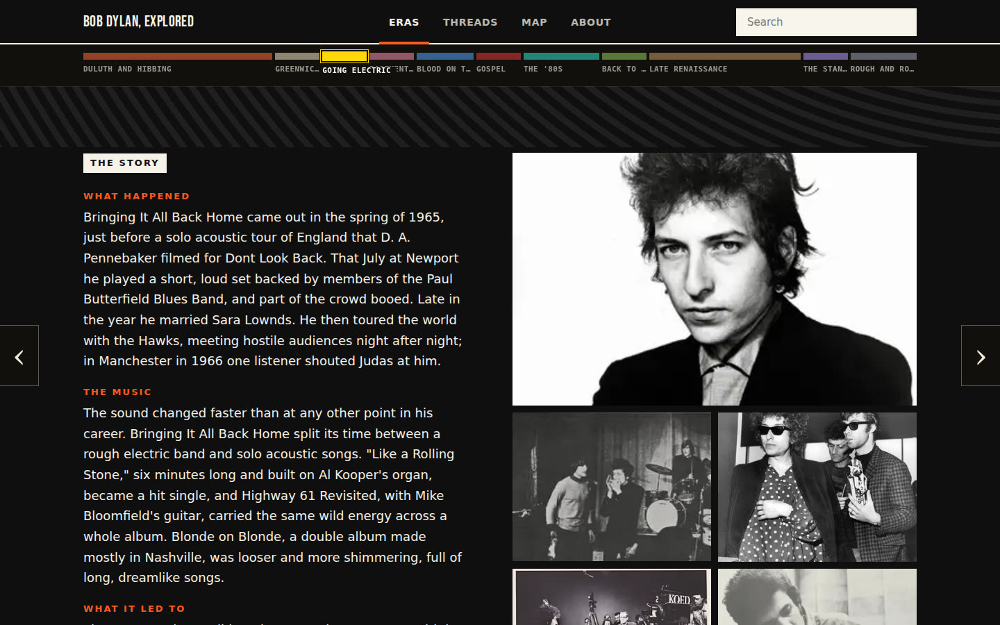
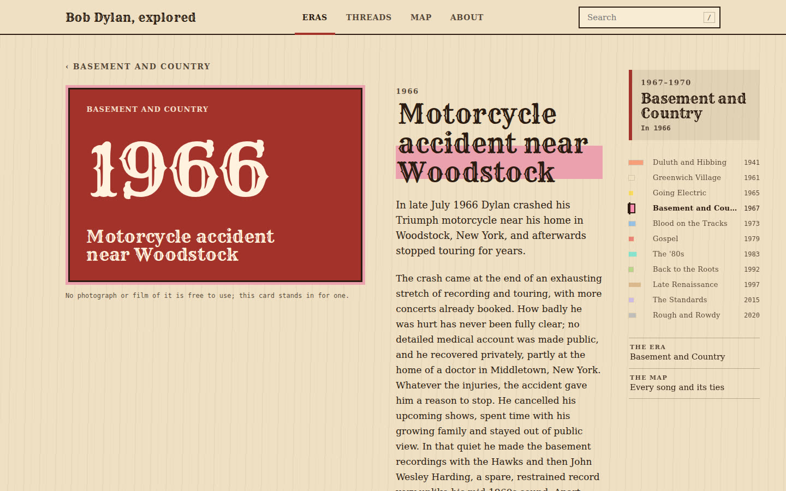

One person and Claude Code built an interactive Bob Dylan site over three days (about 36 hours), starting from an empty folder. Most of its plans were reviewed as narrated videos. Below: the site as it changed, then every step in order.
The finished site as it changed, from the first build to the last. Click a picture to see it larger, then step through the rest with ‹ › or the arrow keys.
The owner asked for an interactive site about Bob Dylan's life and music that works well on a phone. reelplanning turned three of the four plans into narrated videos that paused at each open question for the owner to answer, and after each build a second video showed the finished pages. The fourth plan came from a comment on one of those videos, and was approved in chat.
To try it yourself, install reelplanning, then give the owner's first prompt in an empty folder:
mkdir dylan-site && cd dylan-site && git init
claude --model claude-opus-5-5 "Use reelplanning to plan: Build an interactive website about Bob Dylan. I want someone to be able to explore his life and music — the different eras, the albums, the songs and how they connect — in a way that's more engaging than reading a Wikipedia article, and it should work well on a phone. Start from scratch in this empty folder."
The study ran on Claude Opus 5.5 (claude-opus-5-5), Claude Code 2.1.291, reelplanning 0.2.0, HyperFrames 0.8.52.
Install reelplanning first
macOS or Linux, Node 18 or later, Python 3.10 or later; about 1.3 GB in all.
The narration voice runs on your machine. On a slow machine, use a hosted voice instead (about $0.03 a minute of narration): write these two lines before setup, which checks the voice it will use.
When each video opens, answer its questions, add any comments, then send the review. Each later plan below starts with the owner's message; give it to Claude Code the same way.
1 · Timeline
Taken from the session transcript, the review files and the project's commits. The owner's words are quoted exactly, typos included. Minor steps are collapsed. Times are UTC.
Day 1 · Tue 6 Oct
Plan 1 · new project
The site, from an empty folder
The owner asks for a plan
Use reelplanning to plan: Build an interactive website about Bob Dylan. I want someone to be able to explore his life and music — the different eras, the albums, the songs and how they connect — in a way that's more engaging than reading a Wikipedia article, and it should work well on a phone. Start from scratch in this empty folder.
This first version was not kept. The video you can watch is version 2, rebuilt at 21:42 after the owner's review. Go to version 2 ↓
The plan video: a storyboard, a script, narration and 41 frames. · commit 28e99a6
1 video fix, 1 chat message
The plan video fixed after the fresh eyes' notes, and the plan made clearer. commit 5922d2e
The owner writes
pls put on 8005 instead.
The owner reviews the plan and asks for changes
Question 1 · How should the site be built?which can produce a sophisticated website that is graceful and visually appealing, while fully featured? can you detail more visually the deferences?(typed answer, not one of the options)
Question 2 · How much of the catalogue should go in?All 39 albums, 16 in full
Question 3 · How should album covers look?The real covers
Question 4 · How should connections be explored?Threads, plus a map on wide screens
Question 5 · How should someone listen?An embedded Spotify player
On “Step 2 · The dataset”can we link to a website with lyrics and give a preview?
On “Step 3 · The era timeline”are there any visuals here? is this sample plain on purpose? we are going to want good per-era themeing, as well as real images. else the cite is too plain, just procedural
On “If C: both”actually wondering if we *can* access the map on phone too if we want; just the default will be the cards, but we can toggle. we wont see all the dots by default, we might see only a subset of it but we can maneovure
On “If B: embedded player”and also we might want youtube videos for particular osngs or events that arent on spotify or that we want to explicitly show due to some importantce in the video for example
The plan video rebuilt from the revised plan. · commit 2236da1
1 follow-up commit
The revised plan fixed after the fresh eyes' notes, with its questions in order: photos second, lyrics third. commit 0a798f5
Day 2 · Wed 7 Oct
The owner reviews the plan and approves it
Question 1 · How should the site be built?Astro, a page per song
Question 2 · Where should the era photographs come from?Wikimedia Commons, free-licensed
Question 3 · What should a song page show beside its lyrics link?The link and a preview in our words
On “Step 2 · The dataset”▶ 2:14can we display lyrics in the page though? if you dont want to copy them we can cite, but should be able to put lyrics on if we attribute them to authors i believe? dont see why not? just dont list full lyrics, only part if you want
On “Question 2 · Where should the era photographs come from?”▶ 3:33but note that we can ue other images and shiould still make it completely visually full , even if we cant find licenses... like no photographs and just text will be bad
The plan approved, and the review's comments folded into its steps. commit 4e93bb6
The owner writes
yes, start building it
The site built in Astro: the dataset, a timeline of eras, the pages, threads, a map, search and checks. commit e3ec349
26 free-licensed era photos from Wikimedia Commons added, and a caption fixed. commit ea6d9ca
Search copes with swapped letters, and the walkthrough is written. commit ef9cb16
Fixes from the code check (the base path, dragging the map, lyrics links, the phone check), and the walkthrough's answers. commit ce1eda4
Map labels stay on screen, and the walkthrough's screenshots are taken. commit 2b26d5a
Era panels fit a phone, the phone check catches panels that are too wide, and search lists the best matches first. commit 68c7925
The agent makes the walkthrough video · version 1
This first version was not kept. The video you can watch is version 2, rebuilt at 04:10 after the owner's review. Go to version 2 ↓
The walkthrough video: a storyboard, a script and scenes made from real screenshots. · commit 358e01d
1 build commit, 1 video fix
Long titles fit a phone, the phone check catches headings that overflow, and the screenshots are retaken. commit e11fbc0
The walkthrough video fixed after the fresh eyes' notes, with its narration and two new glossary terms. commit 1746cb5
The owner reviews the walkthrough and asks for changes
Question 4 · Which songs and moments should get a YouTube clip?Official, plus well-known unofficial ones
A walkthrough's questions continue the plan's numbering.
On “Step 2 · Two choices about the data”can you explore more why we didnt fully fill the connections here?
On “An off-plan change · No lyric excerpts”its fine if this is the only possibility but arfe you sure we dcant just quote some small parts? i dont undersand why we wouldnt be able to, this is common to cite a line from a song, even in popular culture
On “Step 3 · Basement and Country, and the fonts”i think the fonts and styling can be much better, more individualistic; it's kind of boring and stock right now. each era should mean something and visually be represented by that via the page. it shouldnt be standardized, it should evoke the creativity of bob dylan
On “Step 4 · Three choices on the pages”is this missing some songs do you mean?
On “Step 5 · Threads and the map”yeah visually this needs much enhancement, it is very basic and even ugly
On “Step 6 · Three choices on search and players”we should be able to view other videos here too i mean there should be a lot we can view and probably on more than two
On “Step 6 · Three choices on search and players”for the 4 that werent found we must find a replacement for it; can't leave dry
On “Step 6 · Search, and players after a tap”these should be loaded already; it looks much cleaner that way. also the rest of the page has ugly bubbles that need improving with the improvemnet of the rest of the themeing
Excerpts added by hand move to their own file, so a data merge keeps them; the second walkthrough review is filed. commit 072a4f2
The owner writes
ok i think its fine to just have AI fill in the lyrics?
The owner writes
ok i think its fine to just have AI fill in the lyrics summary?
The owner writes
yes do both
Every album song gets a summary of its words, in our own words: lyrics are summarised, not quoted (decision D-033). commit ce78a40
The owner writes
can you host the website now on that 8005 and i can open?
Plans 2 and 3 · changes to the site
The site on a computer, and Every track a page
Asked for nineteen minutes apart and planned together, so their steps interleave.
The owner asks for a plan
we need a new plan to make this work better on a computer. right now there is poor formatting (e.g., themes not going on full page, the side by side threads and map) and functionality (e.g., can't press a dot on the thread map, still a button to change cards that can be clicked), as a lot was meant for a phone. we need to fill in more and fix it so it looks great on a computer too
The owner asks for a plan
ok also i know this is a little different but do you recommend including this here as part of hte refactor? i see songs like 'If You See Her, Say Hello' are in the main discogrophy but have nothing there
1 chat message
The owner writes
yes write the second plan now, both reviewed together
The agent writes the plan
Two plans written together: the site on a computer (6 steps, 3 questions) and every track a page (4 steps, 2 questions).
The every-song plan approved: all 277 tracks get a page (D-034), and another writer's song gets the same page (D-035). commit 40447f2
The owner reviews the plan and approves it
Question 1 · How wide should the content go on a computer?Up to 1200 px, two columns
Question 2 · On a computer, does the home page give one era at a time, or all of them at once?One era fills the screen
Question 3 · On a computer, what should clicking a dot on the map do?Select it, and show its panel
On “Question 2 · On a computer, does the home page give one era at a time, or all of them at once?”▶ 2:59actually maybe mixing this with scroll is good. i like how this is presented but if we scroll down, it should get us to the next era with a clean transition through scrolling, wihtout needing to click the arrow
The desktop plan cites those two decisions and records its answered questions. commit 63dbee5
The desktop plan approved: content up to 1200 px (D-036), one era per screen (D-037), a map dot selects its song (D-038). commit 7b82bec
Every album track mapped to a song (271 new ones), with Spotify for all 452, bobdylan.com links and 30 new connections. commit cadf678
What was built
The site on a computer: map clicks reach their dots, eras fill the window one per screen, pages in two columns, threads along the years, and a desktop check. commit 1b32857
Before: the phone's column at 1440 pxAfter: one era across the window
3 build commits, 1 follow-up commit
Official clips for 351 of the 452 album songs, and a check for them (the commit's 364 also counted 13 moments' clips). commit 03bd77d
The walkthroughs written for both plans, with a new question for the desktop plan. commit d993106
The code checks for both plans, every finding answered. commit 7fae7c0
A long word in a song title (Stardust) no longer breaks mid-word on a computer. commit 66db1e0
The agent makes the walkthrough video · version 1
This first version was not kept. The video you can watch is version 2, rebuilt at 21:10 after the owner's review. Go to version 2 ↓
Both walkthrough videos (12 and 16 scenes) with the fresh eyes answered; songwriter credits fixed for three songs. · commit f18db34
Both walkthrough videos (12 and 16 scenes) with the fresh eyes answered; songwriter credits fixed for three songs. · commit f18db34
The owner reviews the walkthrough and approves it
On “Step 1 · Takes, live takes, co-writes”▶ 0:36probably want to give each writer credit
On “Off-plan change · no Genius links”▶ 1:16are there other lyrics providers not blocked?
On “The rest of the choices”▶ 2:05Flagged: The 1979 Saturday Night Live moment stays without a clip: the YouTube finder found the same unofficial upload the first build dropped, and now skips it
Flagged one of the agent's choices for another look
From the every-song walkthrough review: co-writers credited on 21 songs, Lyrics.com links for 22 songs, and the 1979 Saturday Night Live clip back. commit d94d01d
The owner writes
i just sent the desktop, can you see?
Plan 4 · changes to the site
A fuller site
The owner reviews the walkthrough and asks for changes
Question 4 · On a computer, should the full map offer a way to the thread cards?Add "A thread from this song ›" to the map page
A walkthrough's questions continue the plan's numbering.
On “Off-plan change · the threads list's covers”▶ 1:55i would like to give some visuals for these as well
On “The rest of the choices”▶ 2:55Flagged: the album page's left column is not sticky
On “Anything you'd change?”▶ 3:00i also think that some on the desktop feels kind of bare; we might need more content. like the sides of the page are still kind of empty, and especially the biogrpahy pages with no other contents. they should have links, photos, etc. and same with album pages, some song pages. now i dont want it cluttered, i just want more informaiton, more visuals, more interaction even. just so there's enough
Flagged one of the agent's choices for another look
From the desktop walkthrough review: the map page links a song to its thread, every thread shows covers, and two scenes of the video rebuilt. · commit e10926c
The owner approves the plan in chat
ok i approved walkthrough. then sure i approve this, you can do it in chat
The owner reviews the walkthrough and approves it
Question 4 · On a computer, should the full map offer a way to the thread cards?Add "A thread from this song ›" to the map page
A walkthrough's questions continue the plan's numbering.
The fuller-site plan approved in chat with its recommended answers (D-083 to D-085), and the desktop walkthrough approved. commit 8cd2446
What was built
The fuller site: stories for eras, moments and albums, 38 more photos, an album player, track rows, era bands, a side rail and links out. commit 77595ec
Added to every album page: a player for the whole album, and an essay (each song's page already had its own player)

Added under every era: its story beside a gallery of photographs
1 build commit
The fuller site's walkthrough and code check written; two questions came up during the build. commit d310eb2
From the walkthrough review: each era links to Wikipedia, a drawn card for each moment with no photo, fuller galleries, and a Spotify link for Fallen Angels. commit 7017206

A drawn card where no free photo exists
The owner writes
yeah i dont see youtube in there, i wonder if thats just bc we doing localhosting and that might address itself later?
1 chat message, 1 build commit
The owner writes
ok great i see it, maybe we should note this somewhere thoug
The README says how to run the site, and to open it at localhost so YouTube clips play. commit 4d1f29d
2 · How the reviews worked
Plan videos
Three of the four plans were made into narrated videos. Each paused at an open question for the owner to answer. The fourth was approved in chat.
Quick checks
A plan video also asks a few multiple-choice questions, to check the viewer is following. They decide nothing.
Saved decisions
The owner's answers were saved as numbered decisions in decisions.md. Each later plan lists the ones it must keep, as in the fuller plan.
Walkthrough videos
After each build, a video of the built pages paused on choices the agent made without asking. It stopped where a choice showed on the site or would be hard to undo. A walkthrough's questions continue the plan's numbering.
Fresh eyes
Before the owner saw a video, two agents that never saw the chat watched it: one as a newcomer, one as a designer. Each of their notes has a written answer, fixed or kept, as in this designer's notes.
In the timeline
A video fix is a commit that changes a video after it was first made. A follow-up commit answers a review or a check. A build commit adds to the site.
Appendix
The commands, in the order they ran
Write a plan and check it against earlier decisions
bob-dylan-site/transcript.zip the session up to the end of the build, as Claude Code recorded it (the owner's email, account skills and connected accounts redacted)
timeline.json this timeline, as data
study.json what this page says about the study, beyond the timeline
commits.txt the project's commits, one a line
project/ the project as committed: source, data, plans, reviews, decisions
docs/bob-dylan/
watch/ the videos, to watch
site/ the built site